[ Home ] [ Travel ] [ Photography ] [ Pets ] [ Games] [ Rowing] [ Physics ]


Cruising on the Symphony of the Seas
Travel
Cruises
Past Cruises (Diaries)
Future Cruises
Rogues Galleries
Land Trips
Diaries (Land Trips)
Hawai'i - Big Island - 04'01
Hawai'i - Maui - 05'02
Hawai'i - Big Island - 04'03
Hawai'i - Kaua'i - 09'04
Hawai'i - Big Island - 04'06
Hawai'i - Maui - 04'06
Mainland China - 05'07
Phoenix, Arizona - 12'07
Greek Isles - 05'08
Hawai'i - Kaua'i - 09'08
Hawai'i - Big Island - 09'09
Hawai'i - Maui - 05'12
Hawai'i - Big Island - 04'13
Ireland - 08'13
Mexico - Cancun 11'13
France/Belgium/Lux 07'15
Hawai'i - Big Island - 05'17
England / Wales - 06'17
Hawai'i - Big Island - 09'19
Photography
Cameras
Underwater
Pets
Tara
Blackie
Whitey
Muffy
Ollie
Rusty
Fluffy
Rufus&Dufus
Games
Rowing
Physics
Rating (out of 5):
Ship  Food
Service
Itinerary
Food
Service
Itinerary
Marjorie and I love ships of all different sizes, so when RCI launched another "biggest cruise ship in the world" we just had to see it. Having done sister ships Allure and Harmony and really enjoying them, we decided to book the Symphony. It was all we loved from the older sister ships with some interesting twists to make it unique. The cruise was only 7 nights long, so we preceded it with another short cruise on the Mariner of the Seas. We overnighted in Miami between the two cruises. You can read about our earlier cruise on the Mariner here.
The ship was sailing full (6089 passengers) but as we had noticed on
the other big ships there was plenty of public space that it never felt crowded.
As I mentioned in the Mariner diary the Symphony still had formal nights.
However it wasn't enforced, even allowing people in wearing shorts.
The food, service and ship were wonderful. The itinerary was a bit
ho-hum to us having been there so many times, but thinking back to
our initial cruises this would have been a wonderful itinerary.
I should mention that on the Mariner (previous cruise) we met
three different couples who were doing the same as us - warming up
on the Mariner and then B2B'ing on the Symphony. So, we knew a
few people even before we boarded the ship
Day 1 (Jan 19) - Boarding in Miami
Our shuttle from the hotel let us off at the cruise dock about noon. The
Symphony looked huge from the dock. Checking in was a snap via the huge
terminal building. We couldn't get to our cabin yet so hauled our carry-ons
to the Park Cafe. We had a nice lunch and it was 1:00 PM so time to check
out our cabin. Our suitcases were soon delivered and we moved our stuff
into cupboards and drawers. Lots of space for us. Afterwards we wandered
the ship which was very familiar as we had previously sailed the Allure and
the Harmony. Muster drill was at 3:45 and was done indoors. Our meeting
place was the main dining room. At dinner time we met our new table mates.
We were sat at a table for 6, with two chairs unassigned, so there would
only be the four of us each night. Our new mates were Trish and ... oops,
I forgot his name! Note: They seemed like nice people and we chatted
throughout the meal. The only weird thing was when they explained that they
really liked the casino. Trish claimed that she generally won enough each
cruise to pay for the cruise. They had done a number of cruises too. What were
Marjorie and I doing wrong? I had chicken marsala. After dinner we attended
our first entertainment booking - Hairspray. We didn't recognize any of
the (loud!) music and it got a little repetitive, so we bailed after 45
minutes. Time for bed.
Day 2 (Jan 20) - Back to Nassau
We were up about 7:30 to watch us come in to Nassau. We had been here 5
days ago on the Mariner. This time there were 4 ships in dock, including
the Mariner! This time we would be a shorter day, with our planned departure
being 1:45 PM. We had breakfast in the MDR and then headed to morning trivia.
We joined another couple and became fast trivia partners for the rest of
the cruise. Afterwards we headed ashore to wander through the area of Nassau
close to the ship. Marjorie found some free internetat one of the businesses.
For lunch we did the MDR with their fabulous salads. As we sailed away
just after lunch the skys darkened and then it poured in rain. I felt sorry
for the other ships that might have had folks out on excursions. I bet
they got soaked. For dinner I had beef tenderloin and Marjorie had almond
cod. It was formal night so I was wearing my tie and sweater. Note:
At one point we talked to our table mates about the dress code and I mentioned
that I had seen a family who were all in shorts. That theoretically isn't
allowed even on non-formal nights. When we stood up to leave the table I
noticed that our table mate was wearing shorts. Oops! We never saw them
at dinner again. Was it something I said?
At 7:30 we attended the ice skating show (our second reserved venue).
Then we wandered and went to bed.
Day 3 (Jan 21) - A day at sea
Today was our first sea day as we chugged towards St. Thomas. It was a
warm and sunny day. We were up at 7:30 and had a leisurely breakfast in
the Solarium. We had enjoyed the Solarium on the others ships. It was basically
a buffet with an omelet station. It was quiet and relaxing, not like the
Windjammer zoo. Afterwards we attended a get together for Diamond Club members,
hosted by the captain and his direct reports. The meeting was held at the
aqua show pool, but the captain didn't perform. For lunch we did the salad
bar in the MDR. Once again delicious! We spent the afternoon wandering the
ship, playing trivia and reading on the balcony. Note: The art
work throughout the ship was amazing. One unique feature was a piano staircase.
Stepping on a tread prompted a piano sound(s). The steps did not impact
the melody, only the rythmn. What fun!
Speaking of pianos, each afternoon a piano was rolled into one of the atrium elevators.
There was room for the pianist plus 5 or 6 passengers and you could ride up and down all evening
with your personal piano man!
For dinner I had beef stroganoff.
Our dinner mates were nowhere to be seen, so we ate by ourselves at a table for 6.
Our mates had not mentioned using a specialty restaurant, so I suspected a medical problem.
At least the service was good!
We didn't have any entertainment booked for the evening, so just wandered
and watched some of the Ozzie Open.
Day 4 (Jan 22) - Crown Bay, St. Thomas
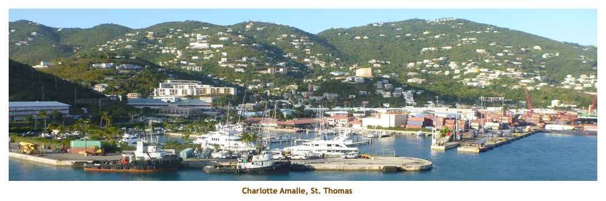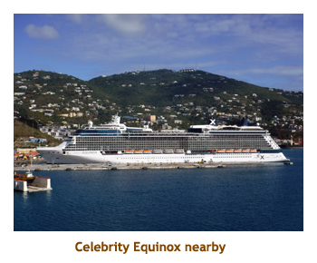 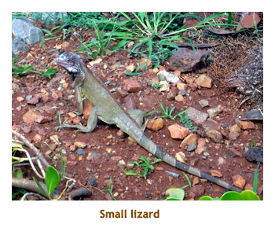
We were up at 7:30 as we sailed towards Crown Bay Harbour, St. Thomas.
We would be docking there about 10 AM. There
were several large ships in at the main dock, so we were "overflowed" to the
Crown Bay facility. This was the same dock we had used when we were here for
Christina and Matt's wedding many years ago. That brought back many great memories!
Seeming as this was our 7th time to St. Thomas, we had done all the interesting
excursions. So this time we decided to just walk around the dock area. We had
breakfast at the Solarium (fast becoming our restaurant of choice) where I had
my usual fruit plate and omelet with everything).After docking, we fled the ship and did our
walk around in the morning sun (hot!). We were back on board again in time for
lunch, We had lunch at the Park Cafe (no salad bar today). For the
afternoon we wandered the ship and read on the balcony. Once again we were
stood up for dinner, but that was OK. I had braised beeef short ribs. Later in the
evening we attended the aqua show called "Hiro". It was fabulous with
swimmers, divers, dancers, trapeze / high wire people and several burley drummers.
I swear that the aqua ahows we've seen before (Allure, Harmony) just get better
and better. One interesting segment is when they do a synchronized swimming
dance routine where some of them are in the pool upside down (just their legs
showing above water) for several minutes. Instead of bursting their lungs, they are
secretly plugged into scuba tanks below the surface. It's cheating but effective!
With ringing ears we proceeded to bed.
| 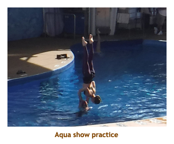 | 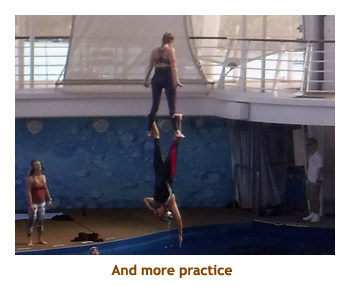 | 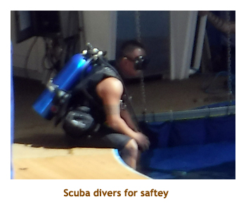 |
Day 5 (Jan 23) - Basseterre, St. Kitts & Nevis
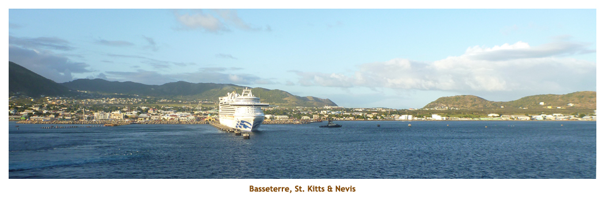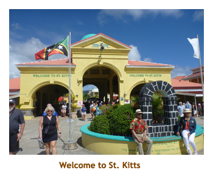 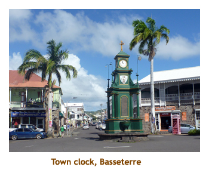
We were up about 7:30 as we docked in St. Kitts. We had been here twice before,
so had nothing planned for the day. We had breakfast at the Solarium. We did our
usual things around the ship and ended up at the Solarium again for lunch. Once
again it was a port day, so no salad bar. After
lunch we headed off the ship and into the town of Basseterre. The last time we were here
they were constructing a cruise dock plaza with lots of shops. Now it was all
completed and looked very nice. We left the dock area and walked into the middle of the "downtown"
center plaza with the huge town clock. Marjorie found some free wi-fi so she was
happy. too. It was quite hot and we had had our fill of shops so returned to the ship.
Back on board we wandered and read. Always time for relaxing! For dinner we
decided to try dinner at the Solarium. It was wonderful and was a high quality buffet.
I had lefkes (Greek meatballs) and chicken souvlaki which was excellent.
We had no entertainment
booked for the evening so we cruised and read, then went to bed.
| 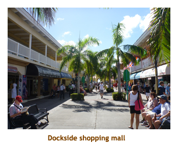 | 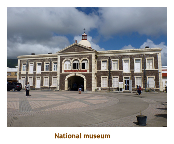 | 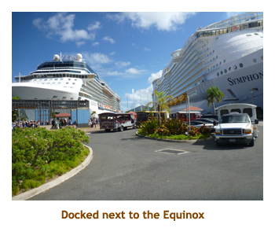 |
Days 6, 7 (Jan 24, 25) - Two relaxing days at sea
Our two days at sea were typical. It was warm and sunny. We breakfasted each
morning at the Solarium. For the morning we just bummed around. Being sea days, the
salad bar in the MDR was our choice for lunch. In between eating stops we managed to
squeeze in a future cruise presentation, some trivia games and a t-shirt sale.
On the first day it was formal night so we had to do the MDR for lobster (me) and
lemon chicken (Marj). Our waiter confirmed that our table was empty on the previous night
when we ate in the Solarium. Afterwards we attended our final booked show - a
song and dance tribute to flight. It was quite good.
In the afternoon of the second day we had to get ready for a dinner date.
Marjorie had befriended a lady (Anna)
that we had met on the previous cruise on the Mariner. Marjorie just happened to
meet her on the first day of the Symphony cruise. so had traded room numbers.
We later agreed to meet for dinner today at the Solarium. It was a very nice time
and I had lefkes (meat balls) and chicken marsala. Afterwards it was time to pack
our bags and get them out into the hallway. Then, to bed.
| 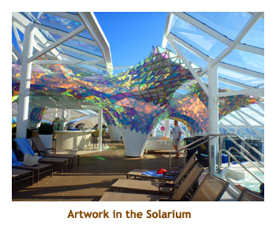 | 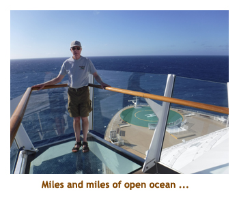 | 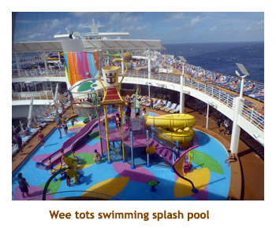 |
Day 8 (Jan 26) - Disembarking Miami, overnighting in Houston, then home

It was our final day of the cruise, but it would takeus two days to get home. Our first leg was to Houston where we would overnight and then our second leg would be to Calgary. We were up around 7:00, had a quick breakfast from the buffet and then headed to our exit staging area. At 7:45 we left the ship and proceeded to the terminal building to get our bags and go through Customs. It was a cloudy, cool day and currently raining a bit. Our flight to Houston wasn't until 6:30 PM, so we had booked a special transfer bus that would take us to an Everglades adventure for a few hours in a swamp boat and then drop us at the airport at 3:00. We did the hour long drive to the Everglades Eco Adventure Park only to find that the tour operator had cancelled the park because of the bad weather. Rats!! It was misty, cold and wet - deep down I was probably glad they cancelled it. Instead they took us to the nearby Sawgrass Mills outlet center for 3 hours of shopping. Groan!! We finally got to the airport, had some dinner and then boarded our flight to Houston. We arrived in Houston about 8:30 and took the shuttle to the Sprinhill Suites hotel. It was late so we went straight to bed.
Our wake-up came at 4:45 AM. We shuttled to the airport to catch a 7:00 flight to Calgary. Christina was there to meet us and to drive us back to her house to pick up our car. We were shortly back home. The kitties were fine. For the diary of the first part of our trip, please visit the Mariner of the Seas trip diary.